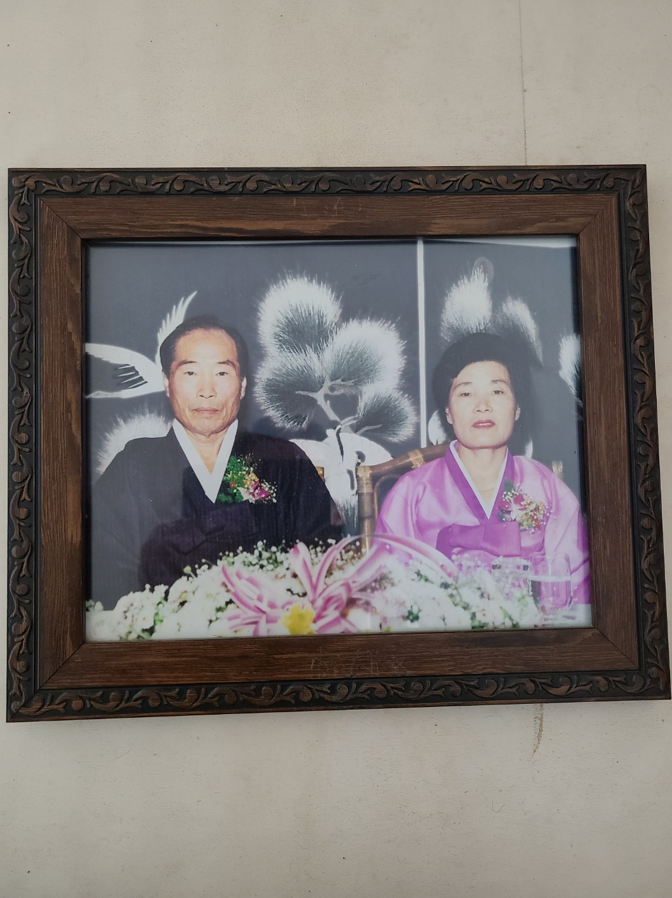
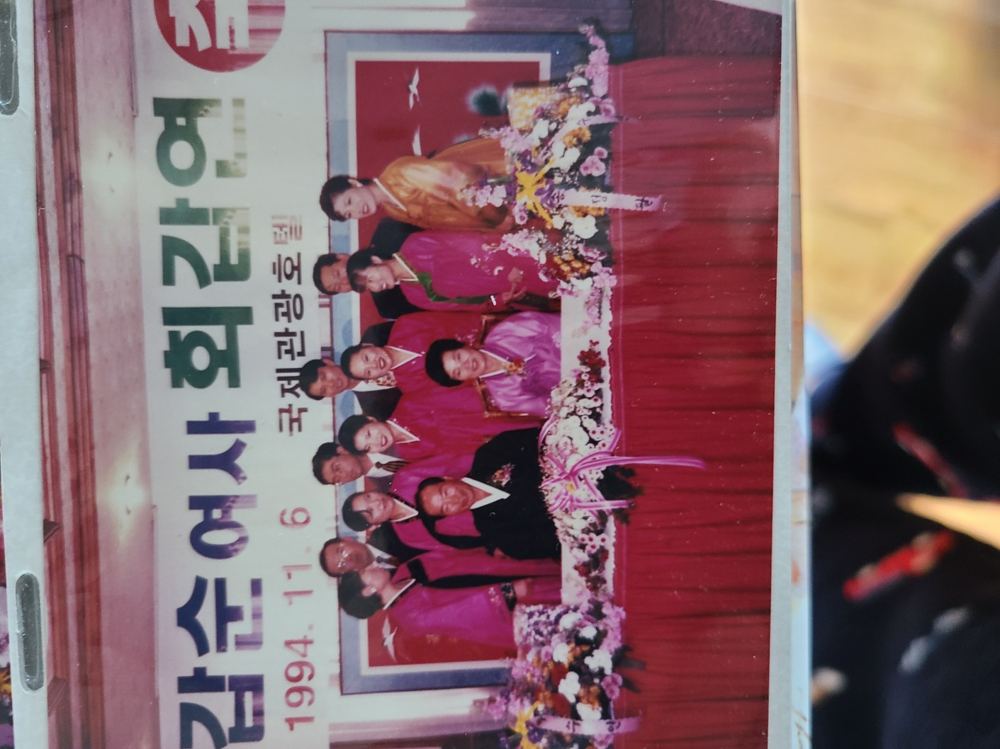
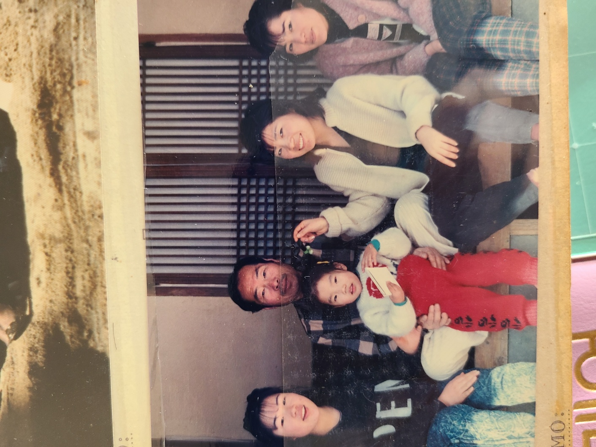
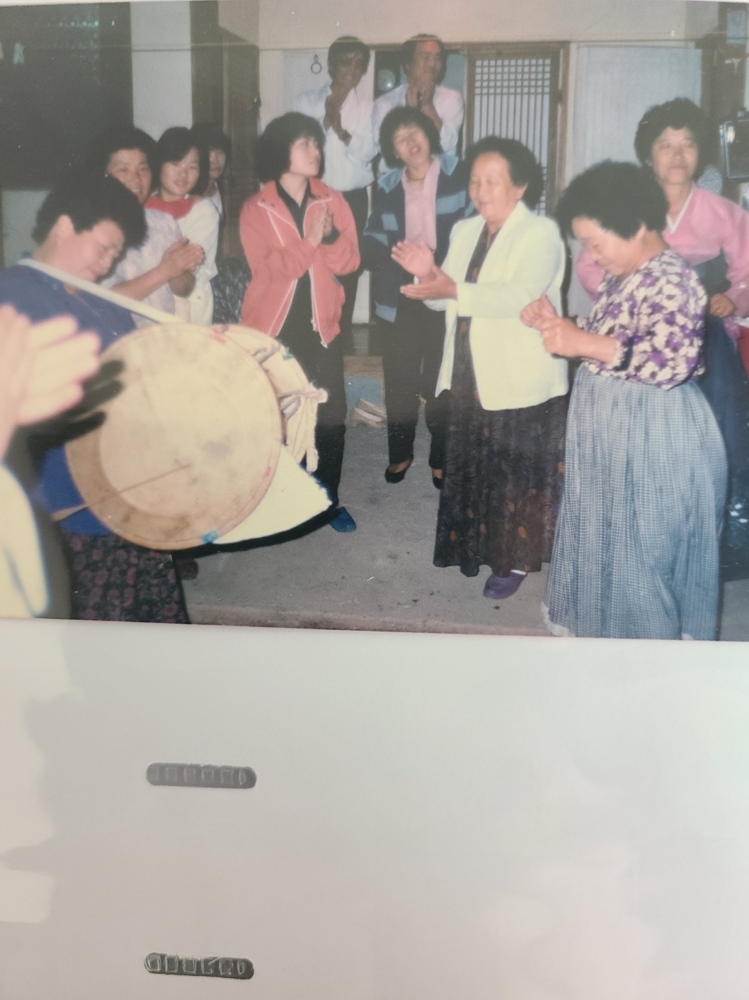
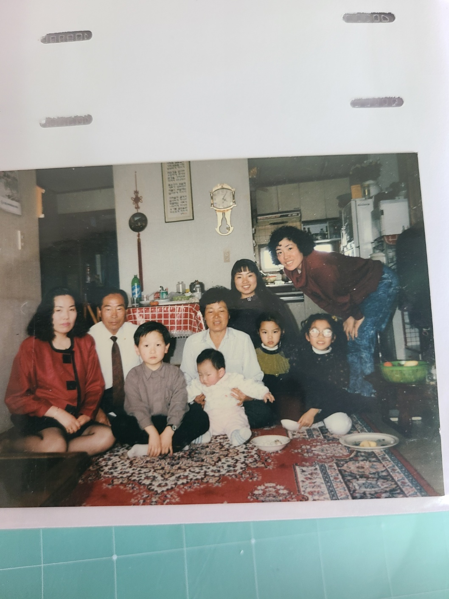
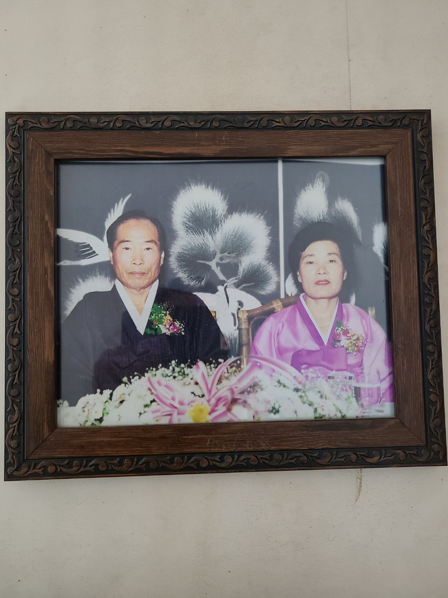
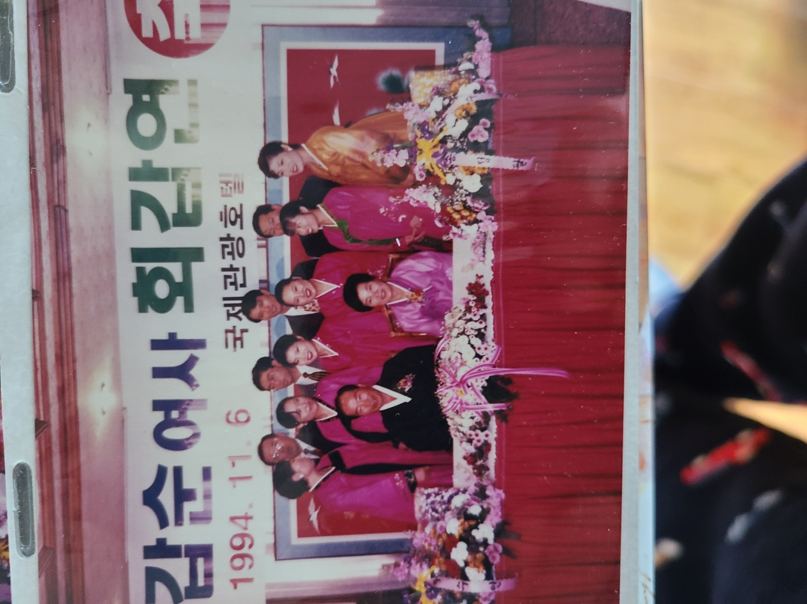
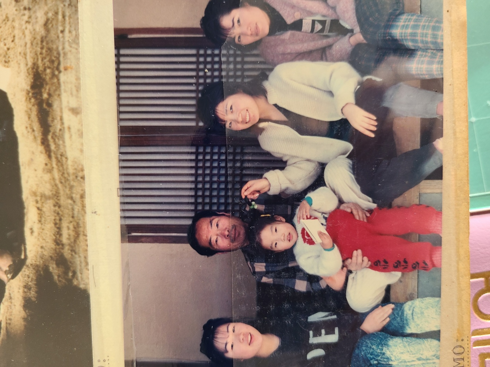
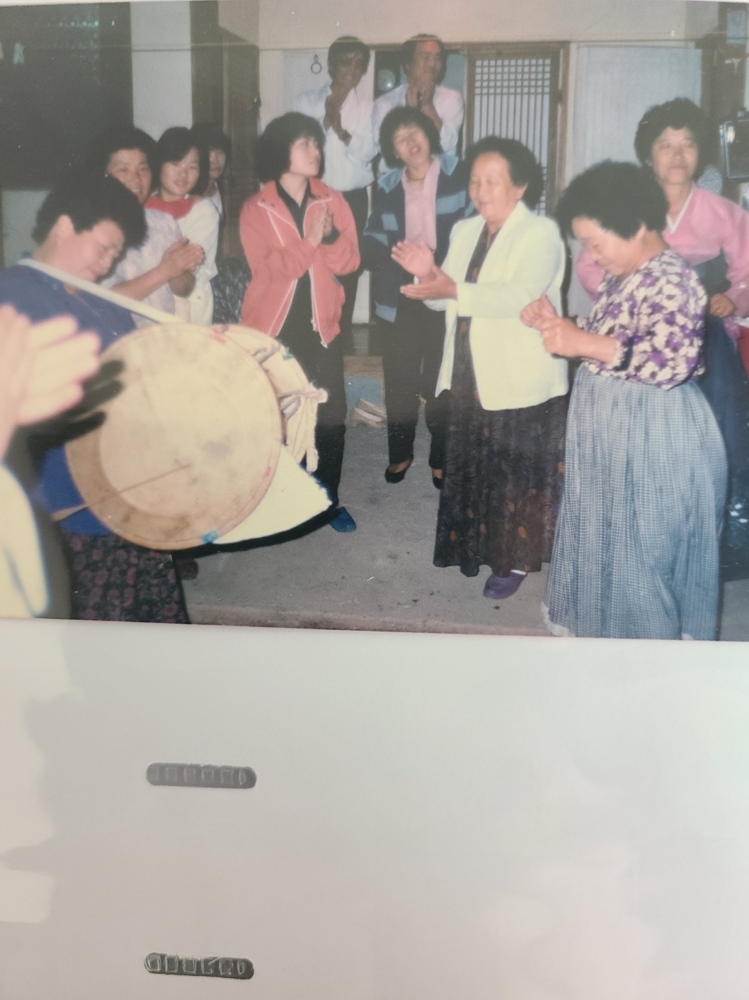
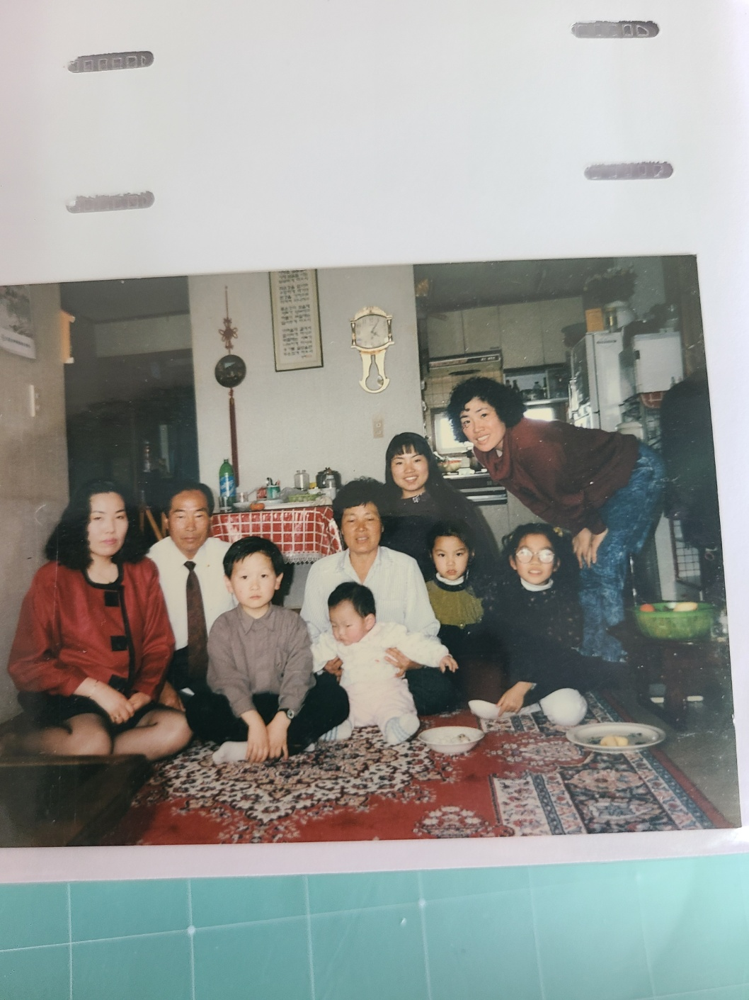

사람뿐만 아니라 동물에게도 부모의 존재는 매우 중요하다. 태어날 때부터 자립하기 전까지 잠시 의탁하는 존재로, 이때는 혼자의
힘으로 살아갈 능력이 없기에 누군가의 보호가 필요하다. 그래서 갓 태어난 새끼는 부모의 양육을 받으면서 살아가는 법을 배우고
자립할 준비를 하며 일부 종은 무리를 이루며 장성한 새끼와 부모가 같이 살아가는 경우가 있지만 대부분의 종은 자립과 동시에
독립하여 영원히 이별하게 된다.
예로부터 '자식은 전생에 빚쟁이였다'는 말이 있지만, 사실은 전생이 아니라 현생에서 동의 없이 낳았다는 책임을 진 현생의 빚쟁이라고 할
수 있다. 사회적인 동물인 인간은 자신이 생각하는 것보다 부모에게 사회적으로 많은 영향을 받게 된다. 유년기를 어떤 부모와 보냈는가에
따라 삶이나 가치관부터가 달라지게 된다. 좋은 부모를 만날 경우 사회적 성격도 원만하게 성장할 수 있고 자신의 특기와 재능을 발현하는데
반대의 경우보다 월등히 유리한 경향이 있으나, 나쁜 부모를 만난다면 인격부터 시작해서 학업, 인간관계 등 모든 면에서 평생이 꼬인다.
심지어 부모가 좋지 않다면 다른 가족 구성원들도 여러 면에서 좋지 않을 확률이 높다.
가정 형편이 복잡한 사람일 경우 심지어 낳은 부모와 기른 부모가 다른 경우가 있는데, 이는 낳은 부모가 자의나 타의로 인해 아이와 떨어졌을
때 발생한다. 지금 현실에서도 적지 않게 발생하는 일이며 사람의 감성을 자극하는 소재로서 많은 픽션물에서 사용되기도 하는 소재이기도
하다. 이런 경우 거의 반드시 길러준 정이 우선인지 낳아준 정이 우선인지에 따른 논쟁을 불러일으키곤 한다.
다만 현대에는 기른 정이 더 중요하다는 추세이며, 자식을 버린 부모가 죽은 자녀를 이용해 이득을 취하는 일(상속, 유족보상 수령 등)을
막아야 한다는 여론이 대세를 이루고 있다. 또 부모가 자녀를 낳은 이상 양육은 의무지만, 자녀가 부모를 부양하는 것은 의무가 아니라는
의견도 흔하게 제시된다.




